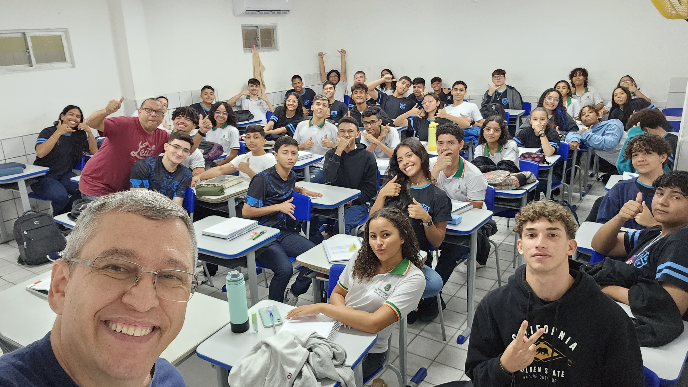

Bem vindo
ao ARCO!
Este é o Acervo anti-racista
contra colonial, “Uma flecha
atirada no tempo”.
Conheça agora os Autores deste Acervo
Ailton Krenak
Ambientalista e Filósofo
“O futuro é ancestral e a humanidade precisa aprender com ele a pisar suavemente na terra”
Nêgo Bispo
Poeta e Filósofo
O pensador, Nêgo Bispo, foi um filósofo, poeta, escritor, professor e ativista político. Ele atuou em movimentos sociais e em organizações de defesa da cultura dos quilombos.
Ayòbámi Adébáyò
Escritora nigeriana
Seu romance de estreia, Fique Comigo, foi indicado a diversas premiações. Foi traduzido para vinte idiomas, e considerado um dos melhores do ano pelo New York Times.
Babau Tupinambá
Líder indígena
Ele atua na defesa dos Tupinambás de Olivença em um violento conflito fundiário que atinge o estado da Bahia, na região entre os municípios de Buerarema, Ilhéus e Una.
Carolina Maria de Jesus
Escritora e compositora
Ficou nacionalmente conhecida em 1960, com a publicação de seu livro Quarto de despejo: diário de uma favelada, nele relatou o seu dia a dia na favela do Canindé, cidade de São Paulo
Dragão do Mar
Jangadeiro e Revolucinário
Por sua luta contra a escravidão, Dragão do mar foi nomeado Herói da Pátria em 18 de julho de 2017.
Chico Science
Cantor e Compositor
Líder do manguebeat, movimento de contracultura que, por meio da mistura de ritmos, mostrava as desigualdades da região de Recife durante um periódo de caos.
Conceição Evaristo
Escritora afro-brasileira
“O importante não é ser o primeiro ou primeira, o importante é abrir caminhos"
Davi Kopenawa
Líder político Yanomami
Uma das lideranças intelectuais e políticas mais importantes na defesa dos povos originários

Daniel Munduruku
Indígena Munduruku e Fílosofo
“Escrevo por entender que é a minha maneira de fazer política, minha maneira de ajudar o Brasil a pensar o Brasil que ele não conhece, o Brasil que foi sempre ocupado nas narrativas hegemônicas"
Djamila Ribeiro
Fílosofa e Escritora
“O feminismo negro não divide a gente. Ele trabalha pela interseccionalidade, pela valorização de todas as ideias e por um projeto de sociedade antirracista.”
Eliane Potiguara
Intelectual e Ativista
Nome fundamental para o debate sobre as questões indígenas no país, trajetória de luta em defesa dos povos originários ao longo de mais de quatro décadas de atuação por meio da publicação de cartilhas e livros
Frantz Fanon
Psiquiatra e filósofo
“Hoje acredito na possibilidade do amor; é por isso que eu me esforço para rastrear suas imperfeições, suas perversões.”
Gracê passo
Atriz e diretora
“O tetro é uma forma de resistência porque é uma forma de viver"
Grada Kilomba
Escritora e psicóloga
“É preciso discutir por que a mulher negra é a maior vítima de estupro no Brasil”
Itamar Vieira
Escritor brasileiro
“Se o ar não se movimenta não tem vento; se a gente não se movimenta, não tem vida"

Jarid Arraes
Escritora brasileira
“Escrevo para honrar minha ancestralidade"
Jaider Esbell
Artista de belas artes
“A arte é uma extensão da nossa política para este mundo"
Kabengele Munanga
Antropólogo brasileiro-congolês
“O racismo é um crime perfeito no Brasil, porque quem o comete acha que a culpa está na própria vítima. Destói a consciência dos cidadãos brasileiros sobre a questão racial."

Kalaf Epalanga
Músico e escritor
“A arte imemorável de entrar em uma festa sem ser convidado"
Paulina Chiziane
Escritora moçambicana
“Contar uma história significa levar as mentes no voo da imaginação e trazê-las de volta ao mundo da reflexão"
Ricardo Aleixo
Poeta e músico
Suas obras mesclam poesia, artes visuais, vídeo, dança, performance, música e design sonoro.
Sueli Carneiro
Filósofa e escritora
“O pessoal da orientação sexual não vai retroceder em suas lutas, as mulheres não vão recuar nas suas agendas; nós não vamos voltar para a senzala. E isso está colocado. Vai ter luta!"
Sonia Guajajara
Ministra dos Povos Indígenas do Brasil
“As pessoas precisam entender que a poiar a causa indígina hoje é apoiar sua própria existência"
Trudruá Dorrico
Escritora brasileira
“Os indíginas são os verdadeiros brasileiros"
Verenilde Pereira
Escritora brasileira
“Não vim no mundo para ser pedra"
Sobre este Trabalho
Este projeto foi totalmente desenvolvido pela turma de informática da EEEP Joaquim Antônio Albano de 2023. Orientado pelo professor de sociologia Harley Almeida.